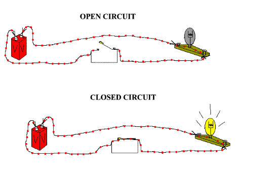

class: middle # working principles to deal with electricity. .footnote[for ima-creative-computing; by arjun; 260911. <br>written draft [here](https://arjunmakesthings.github.io/itp-blog/working-principles-to-deal-with-electricity).] --- class: top # the general premise: -- ## tiny, excited beings move from '+' to '-' of a power source, and work to make things happen in our world. --- class: middle <figure> <p></p> <figcaption>closed vs open circuit.</figcaption> </figure> --- class: top # conductive vs insulating: -- ## beings are picky, and only travel on paths made of certain materials. --- class: top # load: -- ## any object that makes beings work. --- class: top # short-circuit: -- ## beings will cause chaos on the '-' side if you don't make them work the right amount. --- class: top # voltage: -- ## the desire of beings to go from '+' to '-'; corresponding to their energy. --- class: top # current: -- ## the number of beings that can travel on a path in one unit of time. the wider the path, the more beings can travel through it (hence thicker wires allow more current to pass through). --- # resistance: -- ## these are tiny bumps that reduce the energy and, therefore, number of beings that are able to pass through it. --- # ohm's law: